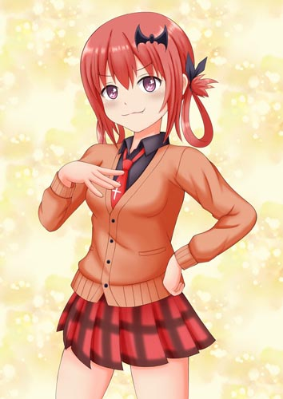
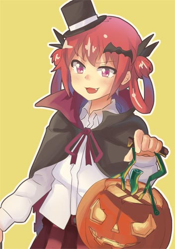
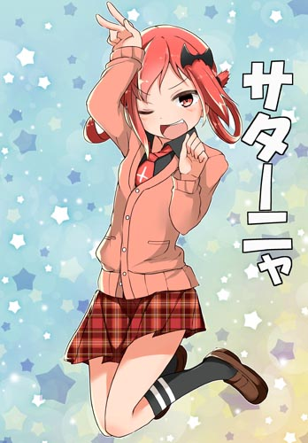
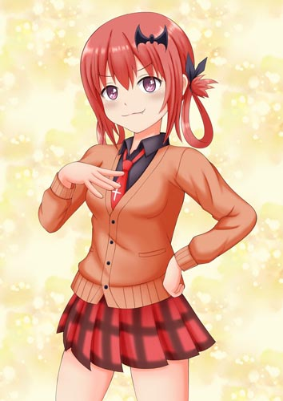
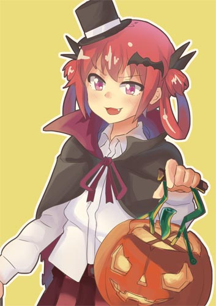
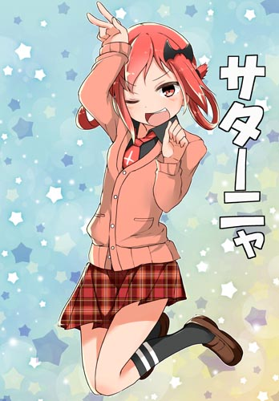
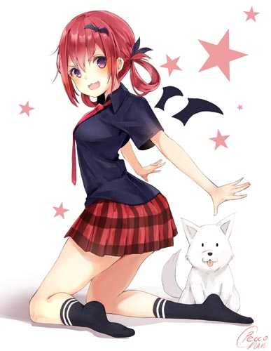
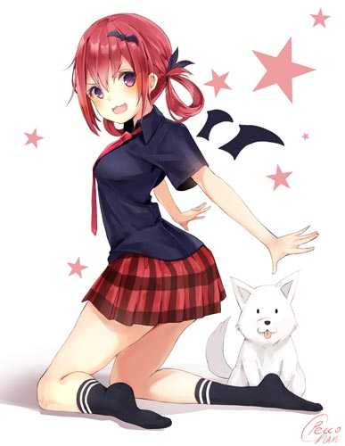

Satania
胡桃沢=サタニキア=マクドウェル
The best Waifu. Ever.
Scroll to learn more!I am really sorry, but the mobile version of this website was kinda rushed and it's really shit, I didn't think anyone would visit it on a phone tbh.
胡桃沢=サタニキア=マクドウェル
I am really sorry, but the mobile version of this website was kinda rushed and it's really shit, I didn't think anyone would visit it on a phone tbh.

There are no steps to becoming a Satania follower, all you have to do is to accept that Satania is the best character
Well If you could make Satania memes and shitposts, that would help us a lot...She's a really pulchritudinous person
We Satania followers are very cultured people, so we only use a very cultured languageLet's end the waifu war with the most kawaii demon in the world!
Even Google knows.

Just think about it, why would Gabriel, Raphi or Vignette be the best?
| Satania | Gabriel | Vignette | Raphiel | |
|---|---|---|---|---|
| Has goals in life | (Becoming the queen of hell) | (Bringing armageddon) | ||
| Has surmounted hard challenges | (Taming the dog) | |||
| Tries her best not to fail heaven/hell school | Kinda? | |||
| Has powerful allies | (The dog & her familiar) | (Her familiar) | ||
| Has a deep, tragic backstory | (Bullied at school) | |||
| Number of member favorites on MAL* | 1,110 | 486 | 445 | 334 |
| Number of subs on their subreddit* | 771 /r/satania | 153 /r/tenma | 233 /r/vigne | 94 /r/watchpeopledie |
| Number of Doujinshi on e-hentai* (Hover the events described for source) | 3(One of which is hilarious) | 1(And in this one, she rapes Raphiel lmao) | 1(Altough, she only appears in 3 panels) | 2(She turns into a dog and obeys to Satania) |
| Number of pics on rule34.xxx* | 67 | 31 | 27 | 24 |
| Number of pics on gelbooru* | 341 | 269 | 209 | 135 |
They may be cute, but when you know the facts, they really aren't.
Just look at this, this is adorable.
Autistic people often have trouble communicating, staying quiet in their own corner all the time, Satania isn't like that at all.
She's probably less autistic than you are!
"Satania is my number two waifu, the number one being Jesus of course!
I bless her and all her followers!"
When you think about it, Satania is a perfect alternative to every character in Gabriel Dropout... Click on any of these cards to see the answers
Why would you do that??? How much of a sadist do you have to be to want to bulli her???
So, may you like her or not,
you'll have to praise her eventually...


 





 
